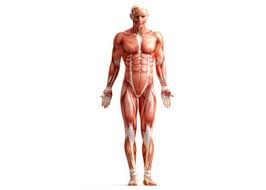

मानव शरीर

मानव शरीर विभिन्न संरचनात्मक स्तरों का एक जटील संगठन है, जिसकी शुरुआत परमाणुओं, अणुओं एवं यौगिकों से होती है तथा कोशिकाएँ, ऊतक, अंग एवं जटिल संस्थान या तन्त्र परस्पर मिलकर सम्पूर्ण मानव का सृजन करते हैं।
रासायनिक स्तर
रासायनिक स्तर पर मानव शरीर विभिन्न जैव-रसायनों का संगठनात्मक तथा क्रियात्मक रूप होता है जिसमें विभिन्न तत्वों के परमाणु यौगिकों के रूप में संगठित होकर जैविक क्रियाओं को संचालित करते हैं। इन तत्त्वों में कार्बन, हाइड्रोजन, ऑक्सीजन, नाइट्रोजन, फॉस्फोरस एवं सल्फर मुख्य होते हैं।
जब दो या दो से अधिक परमाणु परस्पर मिलते हैं, तो वे एक अणु की संरचना करते हैं, उदाहरणार्थ जब ऑक्सीजन के दो परमाणु परस्पर मिलते हैं, तो वे एक ऑक्सीजन का अणु बनाते हैं, जिसे O2 लिखा जाता है। एक अणु में एक से अधिक परमाणु हो तो उसे यौगिक कहते हैं। जल (H2O) एवं कार्बन डाइऑक्साइड (CO2) की तरह ही कार्बोहाइड्रेट, प्रोटीन्स एवं लिपिड (वास) भी ऐसे यौगिक हैं जो कि मानव शरीर के लिए महत्त्वपूर्ण है।
मानव शरीर के भाग
कोशिकाएँ, ऊतक, अंग एवं जटिल संस्थान या तन्त्र परस्पर मिलकर मानव शरीर की रचना करते हैं। ये भाग निम्न है:-
कोशिकाएँ
मानव शरीर असंख्य सूक्ष्म इकाईयों से मिलकर बना है, जिन्हें कोशिकाएँ कहा जाता है। कोशिका शरीर का सूक्ष्मतम रूप है। यह शरीर की एक मूलभूत रचनात्मक एवं क्रियात्मक इकाई है, जो स्वतंत्र रूप से जीवन की क्रियाओं को चलाने की क्षमता रखती है। शरीर के विभिन्न अंगों की कोशिकाओं में भिन्नता होती है, परंतु समस्त कोशिकाओं की मूलभूत संरचना एकसमान ही होती है।
ऊतक
समान गुणों वाली, एक ही आकार की तथा एक ही कार्य करने वाली कोशिकाओं के समूह को ऊतक कहते हैं। मानव एक बहुकोशीय प्राणी है, जो कोशिकाएँ रचना तथा कार्य में एक-दूसरे से भिन्न होता हैं। एक प्रकार की कोशिकाएँ, एक ही प्रकार का कार्य करती हैं और एक ही वर्ग के ऊतकों जैसे- अस्थि, उपस्थि, पेशी आदि का निर्माण करती हैं। संक्षेप में समान रचना तथा समान कार्यों वाली कोशिकाओं के समूह को ऊतक कहते हैं।
अंग
अंग दो या अधिक तरह के ऊतकों का एक युग्मज संग्रह होता है, जो एक साथ कार्य करके एक विशेष क्रिया करते हैं। आमाशय इसका एक बहुत ही अच्छा उदाहरण है- एपीथीलियल टिशू आमाशय को स्तरित करता है तथा इसे आमाशय की दीवार से स्त्रावित होने वाले विभिन्न एंजाइम्स तथा हाइड्रोक्लोरिक अम्ल (HCL) की क्रिया से बचाने में सहायक होता है।
संस्थान या तंत्र
शरीर के विभिन्न अंग एक साथ समूहित होकर किसी एक विशिष्ट क्रिया को करने का कार्य करते हैं, जिसे सामूहिक रूप से संस्थान या तंत्र कहते है। उदाहरणार्थ- श्वसन संस्थान में अनेकों अंग होते है, जो शरीर के बाहर की वायु तथा अन्दर के रक्त के बीच यांत्रिक विधि से विनिमय करते है। विभिन्न संस्थान या तंत्र एक साथ समूहित होकर मानव शरीर की रचना करते हैं, जो निम्न हैं-
- त्वचीय संस्थान
- अस्थि संस्थान या कंकाल संस्थान
- पेशीय संस्थान
- तन्त्रिका संस्थान या नाड़ी संस्थान
- अन्तःस्रावी संस्थान
- रक्त परिसंचरण संस्थान
- लसिका संस्थान
- श्वसन संस्थान
- पाचन संस्थान
- मूत्रीय संस्थान
- प्रजनन संस्थान